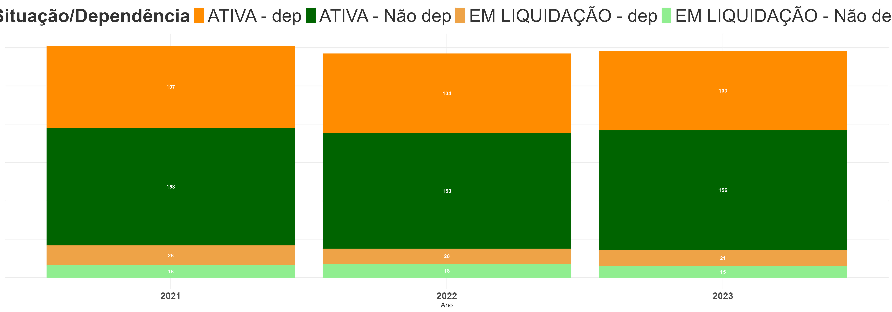
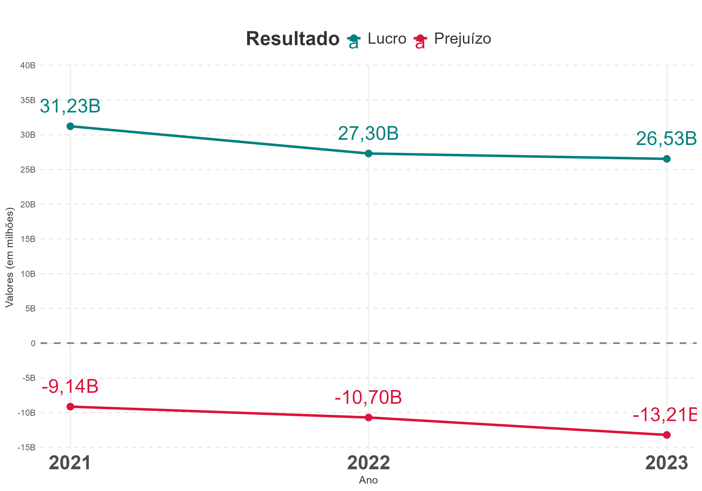
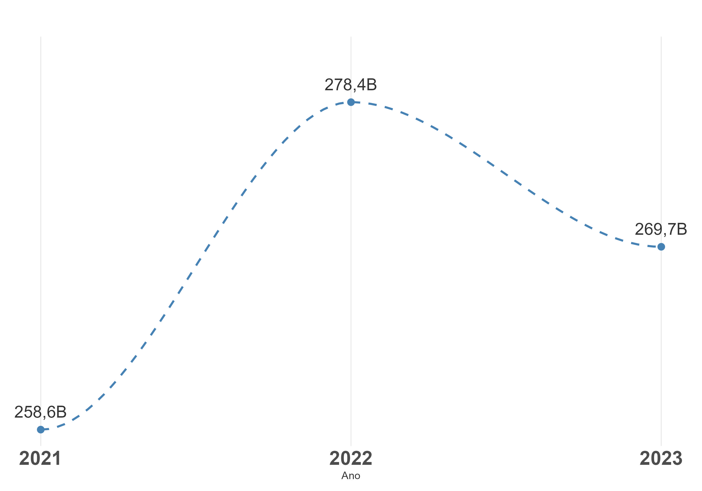
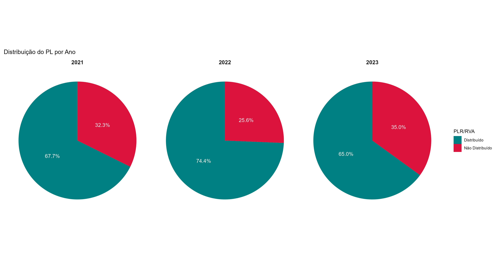
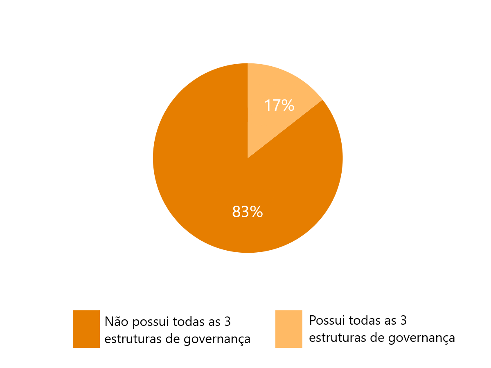

Fruto de intenso esforço da Secretaria do Tesouro Nacional, com o apoio dos Estados, o levantamento de informações de estatais estaduais teve início no exercício de 2019. Até o ano passado a publicação se restringia a uma apresentação dos dados do exercício avaliado, a partir desta quinta publicação o raio-x das estatais estaduais está de cara nova, apresentando também gráficos comparativos de exercícios anteriores, essa comparação se inicia na base de dados de 2021 devido a mudanças metodológicas que ocorreram no período inicial.
Você pode consultar o link das versões anteriores no final desta página.
Espera-se que essas informações permitam que os cidadãos sejam capazes de avaliar as vantagens de um Estado empreendedor, cobrar resultados e fiscalizar as ações dos governos e de suas estatais, entendendo que o objetivo das estatais é a prestação de serviços de relevante interesse coletivo à população.
As informações encontram-se divididas em cinco partes:
- Com quantas estatais se faz um Estado — apresenta o quantitativo de estatais por Região/Estado, informa o total de empresas dependentes e não dependentes e seus respectivos segmentos;
- O Estado empreendedor — mostra o lucro/prejuízo dessas empresas, além de apresentar um ranking de suas respectivas rentabilidades;
- O Estado administrador — relaciona a governança, caracterizada pela presença de conselhos/comitês, com os resultados das estatais;
- O Estado acionista — apresenta o resultado do impacto financeiro líquido das empresas controladas nas finanças públicas estaduais;
- Indícios de dependência — aborda situações de estatais, classificadas pelos Estados como não dependentes, que apresentaram indícios de dependência.
Os dados aqui disponibilizados foram declarados pelos Estados, sendo, portanto, de inteira responsabilidade deles a precisão ou correção das informações consolidadas. Um pequeno ajuste foi realizado pela STN nos dados relativos aos setores das estatais, algumas estatais inicialmente sem classificação setorial foram enquadradas em setores mais adequados de acordo com a STN.
Na ficha abaixo você encontra informações detalhadas das estatais. Para isso, basta selecionar o estado desejado e depois clicar nos círculos. Cada círculo representa uma estatal e traz as seguintes informações: dependência, situação, capital social, investimento realizado, lucro, e link para a carta anual da empresa, nos casos em que ela foi disponibilizada.
Ficha básica das empresas por setor
- Dependentes
- Não Dependentes
- Não Dependentes, com indícios de dependência
Com quantas estatais se faz um estado?
Conforme os dados informados no SICONFI, existem 295 empresas controladas pelos Estados, sendo que 259 estão em situação ativa e 36 em fase de liquidação, destas 32 já se encontravam nessa situação no exercício anterior. Além disso, 21 destas empresas que estão sendo extintas são estatais dependentes.
Em relação ao exercício de 2022, tivemos um aumento na quantidade de estatais, pois, embora 15 empresas deixaram de constar em relação ao ano anterior (02 em Goiás, Minas Gerais, Piauí e Rio Grande do Sul e 01 Ceará, Distrito Federal, Espirito Santo, Paraná, Roraima, Santa Catarina e São Paulo), foram incluídos dados de mais 18 empresas, sendo 04 do Mato Grosso, 03 de Alagoas, 03 do Piauí, 02 do Ceará, 02 do Distrito Federal, e 01 de cada um dos seguintes estados: Goiás, Roraima, Sergipe e Tocantins.
A quantidade de estatais que cada Estado possui varia bastante, o Distrito Federal possui 25 empresas, seguido pelo Rio de Janeiro, com 22, e Santa Catarina, com 16. Em quarto lugar encontram-se Pernambuco, Paraíba, Minas Gerais e Goiás, com 15 estatais cada. Já os Estados com a menor quantidade de estatais são Amapá e Tocantis, com 3 cada, e Roraima e Maranhão, com 5 cada.
O gráfico abaixo mostra a quantidade de estatais por Estado, separadas dependentes e não dependentes. Em termos relativos, 42% das empresas declaradas pelos Estados são dependentes, ou seja, 124 empresas do total de 295, proporção similar ao exercício anterior. O número de estatais por Estado varia de 3 a 25, sendo que o Acre possui apenas empresas dependentes, e outros apenas não dependentes (Maranhão, Rondônia, Rio Grande do Sul, Tocantins)
Quantidade de empresas por Estado
- Dependentes
- Não Dependentes
Em termos de dependência, o Estado do Rio de Janeiro apresenta o maior número de empresas dependentes (15), seguido pelo Acre (12). Ao avaliarmos as empresas não dependentes, Distrito Federal lidera o ranking, com 17 empresas, seguido por Minas Gerais e Santa Catarina, ambas com 12.
Ao longo destes 3 últimos exercícios avaliados a quantidade de estatais se mantém relativamente estável. Também não há mudanças relevantes na proporção de empresas dependentes e não-dependentes ou na situação das empresas, seja ativas ou em liquidação.
TITULO
Ao examinar a quantidade de empresas controladas de acordo com os segmentos empresariais, observa-se que o setor Financeiro possuindo 38 empresas e o setor de Saneamento possuindo 28, são setores com o maior quantitativo de estatais, apresentando-se como setores de maior representatividade entre os estados. Em 3º e 4º lugares estão Desenvolvimento Regional e Habitação e Urbanização apresentando quase a mesma quantidade, 23 e 22 respectivamente. Entre os segmentos com menor número de empresas, destacam-se os setores de Saúde com 5, Mineração com 7 e tanto Turismo quanto Comunicação apresentam 9 empresas.
Abaixo é possível selecionar um setor para exibir sua definição, bem como um mapa indicando os estados que possuem empresas nessa área de atuação.
Em relação ao critério dependência, o setor de Pesquisa e Assistência Técnica Agropecuária continua com o maior número de empresas dependentes (19), em relação ao exercício anterior, seguido pelo setor Habitação e Urbanização (15) e Transporte (14). Por outro lado, o setor Financeiro caracteriza-se pelo maior quantitativo de empresas não dependentes (34), seguido pelo de Saneamento (23) e Gás e Derivados (17).
Quantidade de empresas por setor
- Dependentes
- Não Dependentes
O estado empreendedor
A atuação do Estado por meio de empresas estatais tem previsão na Constituição Federal. Entretanto, ela prevê essa atuação do Poder Público como uma exceção. Além disso, a fim de garantir o alcance do “relevante interesse coletivo”, a eficiência, a eficácia e a efetividade devem estar presentes na atuação das estatais.
Nesse sentido, é importante quantificar os lucros/prejuízos das empresas controladas pelos Estados, além de avaliar o patamar de rentabilidade delas. O gráfico abaixo demonstra a distribuição dos lucros ou prejuízos, categorizado por dependentes e não dependentes.
Ao longo de 2022, os números revelam que 40% das estatais registraram prejuízo, enquanto em 2021, esse número foi de 37% .( veja os dados de 2021)
Ao longo de 2023, os números revelam que 38% das estatais registraram prejuízo (proporção próxima aos 2 exercícios anteriores: 2022 com 40% e 2021 com 37%.
Ao se analisar especificamente as empresas não dependentes, tem-se que 30% delas tiveram perdas financeiras. Esse valor passa para 48,4% se considerarmos apenas as estatais dependentes.
Distribuição das empresas em relação ao lucro ou prejuízo
- Empresas com Prejuízo
- Empresas com Lucro
Ao longo destes 3 últimos exercícios avaliados, observa-se diminuição dos lucros e aumento dos prejuízos das estatais, com o resultado declinando de R$22,1 bilhões para R$13,3 bilhões
Evolução de Lucros e Prejuízos
Em termos de segmento empresarial, o setor que apresentou o maior lucro para o período foi o de Saneamento, com um total de R$ 7,7 bilhões. Logo em seguida, tem-se o segmento de Energia, com um resultado de R$ 6,7 bilhões, e, na sequência, o setor Financeiro, com lucro de R$ 3,9 bilhões. Por outro lado, o setor de Transporte possui o pior resultado para o período, com prejuízos de R$ 8,9 bilhões. Em seguida, o segmento de Abastecimento de Alimentos e Outros Insumos apresentou cerca de R$ 651 milhões em prejuízos.
Lucros e Prejuízos totais por setor de atuação
- Prejuízo
- Lucro
Dessa forma, uma maneira complementar de se comparar os retornos dos diferentes setores analisados é por meio de um indicador de rentabilidade que pondere a magnitude do resultado da companhia pelo seu tamanho. Assim, foi elaborado um indicador que representa uma estimativa da rentabilidade das empresas controladas pelos Estados, calculado pela razão entre o lucro/prejuízo e o patrimônio líquido. O gráfico abaixo apresenta os principais resultados.
Evolução do Patrimônio Líquido Total
Estimativa de rentabilidade das empresas
Rentabilidade definida como a razão entre lucro ou prejuízo e patrimônio líquido. As empresas são representadas por pontos, da seguinte forma:
● rentabilidade positiva ● rentabilidade negativa
Estão excluídas 67 empresas sem informação de lucro / prejuízo ou patrimônio líquido, ou que apresentaram patrimônio líquido menor ou igual a zero. Para uma melhor visualização, não está apresentada uma empresa para a qual o valor do indicador de rentabilidade ficou abaixo de -200%, e 2 empresas para quais o indicador de rentabilidade foi superior a +200%.
![Gráfico que mostra cada empresa como um ponto. Os pontos/empresas estãos dispostos verticalmente conforme a rentabilidade obtida em 2021, a partir do valor zero (quanto maior a rentabilidade, mais para o alto o ponto correspondente está; quanto menor, mais para baixo). Horizontalmente, os pontos que correspondem a empresas dependentes estão à esquerda, e os das empresas não dependentes estão à direita. As anotações do gráfico correspondem às informações que serão mencionadas no parágrafo seguinte ao gráfico.](./plots/roe2.png)
Observa-se que a quantidade de estatais dependentes com rentabilidade negativa (48,7%) é maior do que a das estatais não dependentes (29%). Entretanto, diversos fatores podem estar associados a esse resultado. O fato de as estatais dependentes apresentarem piores resultados pode ser um indicativo de que, de modo geral, a gestão das estatais não dependentes é melhor. No entanto, uma outra explicação para esse resultado pode estar associada ao fato de que alguns setores de serviços essenciais são predominantemente dependentes e possuem a finalidade associada ao atendimento de políticas públicas e não de lucro.
Ao se explorar os números das rentabilidades pelo critério de dependência e por segmentos empresariais, verifica-se que, dentre as empresas dependentes, as de Saúde possuem a maior média de rentabilidade para o ano de 2023, com uma cifra de 101%. Dentre as empresas não dependentes destacam-se os setores Desenvolvimento Regional, Gás e Derivados e Energia, com rentabilidades médias de 70%, 37% e 22%, respectivamente. Já as empresas com rentabilidades médias negativas, destacam-se as dependentes de Turismo (-806%) e Transporte (-60%).
65 empresas pagaram PLR (Participação nos Lucros e Resultados) ou RVA (Remuneração Variável Anual) no exercício de 2023, das quais 2 são dependentes. Os principais setores que pagaram algum tipo de participação nos resultados foram: Financeiro (19 empresas), Saneamento (11 empresas), e Gás e Derivados (10 empresas).
Estimativa de rentabilidade média das empresas por setor
Rentabilidade definida como a razão entre lucro ou prejuízo e patrimônio líquido. Estão excluídas 67 empresas sem informação de lucro / prejuízo ou patrimônio líquido, ou que apresentaram patrimônio líquido menor ou igual a zero. O tamanho dos pontos sugere a quantidade de empresas que foram consideradas no cálculo da média indicada.
- Média Dependentes
- Média Não Dependentes
![É um gráfico que busca ilustrar a rentabilidade agregada das empresas de cada setor, separando-se as empresas dependentes das não dependentes. Para cada setor, há um círculo que representa a rentabilidade média das empresas dependentes que atuam nesse setor, e outro círculo para a rentabilidade média das empresas não dependentes. Os círculos estão posicionados horizontalmente de forma que quanto maior a rentabilidade média, mais à direita o círculo está. Uma linha liga os dois círculos para ilustrar a diferença entre essas duas médias. Para a maioria dos setores, o círculo que corresponde à média de suas empresas não dependentes está à direita do círculo que representa a média das empresas dependentes, ou seja, para a maioria dos setores a rentabilidade média das não dependentes é superior às dependentes.](./plots/roe_dotplot.png)
A maioria das empresas que pagou PLR (Participação nos Lucros e Resultados) ou RVA (Remuneração Variável Anual) é não dependente (na tabela "Pagamento de Participação no Lucros", abaixo, pode-se identificar os casos das estatais que efetuaram esse pagamento). Considerando-se as empresas não dependentes, os principais setores que pagaram algum tipo de participação nos resultados foram: Financeiro (20 empresas), Saneamento (13 empresas), e Gás e Derivados (10 empresas).
Pagamento de Participação nos Lucros
Os números indicam o percentual de empresas do setor que pagaram PLR, para as dependentes e para as não dependentes. Estão excluídas oito empresas para as quais não foram fornecidas as informações necessárias.
- Empresa que pagou PLR
- Empresa que não pagou PLR
O pagamento de PLR ou RVA para estatais federais é regulamentado pela CCE 10/1995, que não permite a distribuição de lucros caso a empresa tenha recebido recursos do Tesouro Nacional, seja para pagamento de despesas correntes ou de capital, o que já impede a distribuição de lucros por estatais dependentes. O regulamento também não permite distribuição de lucros por estatais que tenham registrado prejuízos em exercícios anteriores ainda não amortizados por exercícios posteriores. No entanto, essas regras não são válidas para as estatais estaduais, que seguem regras específicas conforme o Estado. Para maiores informações, ver Acórdão TCU 937/2019.
Foram identificadas duas empresas que apesar de terem apresentado prejuízo em 2022 e 2023, efetuaram pagamento de PLR / RVA em 2023, sendo uma delas dependente. Vale ressaltar que o Decreto 59.598/2013, do Estado de São Paulo, prevê o pagamento de PLR mesmo para empresas dependentes ou que apresentem prejuízo no exercício, desde que atendam alguns critérios como redução do grau de dependência e redução do prejuízo.
Pagamento de Participação nos Lucros
Valores em R$ mil
| UF | Estatal | Dependência | Lucro / Prejuízo Líquido 2023 | Lucro / Prejuízo Líquido 2022 |
|---|---|---|---|---|
| SP | COMPANHIA AMBIENTAL DO ESTADO DE SAO PAULO | Não Dependente | -R$ 22.938.360,73 | -R$ 116.331.803,93 |
| SP | COMPANHIA PAULISTA DE TRENS METROPOLITANOS - CPTM | Dependente | -R$ 851.709.191,69 | -R$ 432.766.889,91 |
Ao longo dos últimos 3 exercícios, a proporção de estatais brasileiras que pagaram PLR ou RVA não sofreu grande alteração, situando-se entre 65% e 75%.
Distribuição de PL por Ano
O estado administrador
Estruturas de governança têm como objetivo principal coordenar a empresa para atingir seus objetivos, e podem ser formadas por diferentes comitês ou conselhos que atuam focados em áreas específicas (por exemplo, fiscal, administração e auditoria) visando auxiliar a empresa em seus resultados.
Apesar de a presença de qualquer comitê ou conselho dentre os citados acima já indicar que a empresa possui algum nível de governança, a análise a seguir irá considerar que há uma estrutura de governança completa apenas no caso de estatais que possuem concomitantemente três órgãos: Conselho Fiscal, Conselho de Administração e Comitê de Auditoria. Essa decisão foi tomada porque diferentes legislações obrigam as estatais a possuírem tais colegiados, de acordo com suas características. Assim, praticamente todas as estatais possuem ao menos um deles.
Legislações específicas estabelecem a necessidade de tais conselhos/comitês nas estatais, de acordo com suas características. A Lei 6.404/1976, que dispõe sobre as Sociedades por Ações, prevê a obrigatoriedade de Conselho Fiscal para toda S.A e de Conselho de Administração para toda S.A de capital aberto. A Lei 13.303/2016, por sua vez, prevê a constituição de Conselhos Fiscais, Comitê de Auditoria e Conselho de Administração.
Considerando-se as estatais não dependentes, 55% delas apresentam as três estruturas de governança, ou seja, possuem conselhos de administração, fiscal e de auditoria. Já dentre as dependentes a proporção cai para apenas 17%. Observa-se aumento de 1% em relação ao exercício anterior.
Distribuição de Estatais Não Dependentes por conselho

Distribuição de Estatais Dependentes por conselho
Em relação às estatais não dependentes os setores que se destacaram foram Saúde e Saneamento, mantendo os índices do ano anterior (100% e 83%, respectivamente), seguidos por Portos e Hidrovias (70%)
Já no caso das estatais dependentes, os melhores setores do exercício de 2023 foram Saúde (67%) e Mineração (50%). Destaca-se que em parte considerável dos setores não há nenhuma empresa que atende ao critério de possuir as três estruturas de governança.
Presença de estrutura de governança por setor
Percentuais das empresas que possuem estruturas de governança completas (Conselho de Administração, Conselho Fiscal e Comitê de Auditoria) por setor e por tipo de dependência.
- Dependentes
- Não Dependentes
O gráfico abaixo mostra que as empresas mais lucrativas possuem as três estruturas de governança, 77% das empresas que possuem estrutura de governança completa apresentaram rentabilidade positiva, enquanto entre as que não possuem, esse percentual é de 54%.
Estimativa de rentabilidade das empresas pelo critério de Governança
Rentabilidade definida como a razão entre lucro ou prejuízo e patrimônio líquido. As empresas são representadas por pontos, da seguinte forma:
● rentabilidade positiva ● rentabilidade negativa
Estão excluídas 67 empresas sem informação de lucro / prejuízo ou patrimônio líquido, ou que apresentaram patrimônio líquido menor ou igual a zero. Para uma melhor visualização, não está apresentada uma empresa para a qual o valor do indicador de rentabilidade ficou abaixo de -200%, e 2 empresas para quais o indicador de rentabilidade foi superior a +200%.
![Gráfico que mostra cada empresa como um ponto. Os pontos/empresas estãos dispostos verticalmente conforme a rentabilidade obtida em 2021, a partir do valor zero (quanto maior a rentabilidade, mais para o alto o ponto correspondente está; quanto menor, mais para baixo). Horizontalmente, os pontos que correspondem a empresas que não possuem estrutura de governaça completa estão à esquerda, e os das empresas que possuem estrutura completa estão à direita. As anotações do gráfico correspondem às informações que foram mencionadas no parágrafo anterior ao gráfico: 83% das empresas que possuem estrutura de governança completa apresentaram rentabilidade positiva, enquanto entre as que não possuem esse percentual é de 55%.](./plots/roe_gov.png)
A Lei 13.303/2016, em seu artigo 8°, prevê também a necessidade da publicação de cartas anuais de políticas públicas e governança coorporativa pelas estatais:
Elaboração de carta anual, subscrita pelos membros do Conselho de Administração, com a explicitação dos compromissos de consecução de objetivos de políticas públicas pela empresa pública, pela sociedade de economia mista e por suas subsidiárias, em atendimento ao interesse coletivo ou ao imperativo de segurança nacional que justificou a autorização para suas respectivas criações, com definição clara dos recursos a serem empregados para esse fim, bem como dos impactos econômico-financeiros da consecução desses objetivos, mensuráveis por meio de indicadores objetivos;
A Lei estabelece também que a carta anual deve ter ampla publicidade, e estar em linguagem clara e direta. Notem que ao exigir essa publicação, a Lei objetiva permitir que a sociedade possa acompanhar as ações das estatais, avaliar seu atendimento ao interesse coletivo e ao cumprimento das políticas públicas. Assim, a sociedade é capaz de agir como um agente adicional à estrutura de governança da estatal.
DNa ficha básica da empresa você poderá encontrar o link para a carta anual das estatais para as quais a informação foi encaminhada pelos entes ou localizada pela STN nos sites das empresas. ficha básica das empresas
O estado acionista
Quais os resultados das empresas para o Estado Acionista?
Há uma relação financeira entres os Estados e suas estatais que se dá, sobretudo, por meio de:
▲ Dividendos — recursos, decorrentes de uma parte do lucro apurado, que as estatais transferem para o Estado.
▼ Subvenções e Aumento de Capital — recursos que os Estados transferem para as empresas.
Quando os Estados recebem mais recursos por meio de dividendos do que transferem por meio de subvenções ou aumento de capital, pode-se dizer que as estatais contribuem para o resultado fiscal do Estado. No entanto, quando as saídas de recursos dos Estados são maiores que as entradas, podemos dizer que tais empresas oneram o resultado fiscal do Estado.
De forma geral, ao longo de 2023, os Estados transferiram R$ 6,2 bilhões como reforço de capital e R$ 11,5 bilhões como subvenções e receberam R$ 3,8 bilhões de dividendos das empresas, de forma que houve repasses líquidos para as estatais da ordem de R$ 13,9 bilhões.
De forma geral, ao longo de 2023, os Estados transferiram R$ 6,2 bilhões como reforço de capital e R$ 11,5 bilhões como subvenções e receberam R$ 3,8 bilhões de dividendos das empresas, de forma que houve repasses líquidos para as estatais da ordem de R$ 13,9 bilhões.
Conforme mapas abaixo, ambos estados tiveram saldo positivo nos últimos 3 exercícios.
Resultado Líquido das Empresas para o Estado Acionista
![Mapa do Brasil com estados coloridos conforme o valor do resultado líquido das empresas do estado. Como mencionado no texto, em 2021, os únicos Estados que receberam mais recursos das estatais do que transferiram foram Alagoas, Espírito Santo, Minas Gerais, Paraná e Rio Grande do Sul. Esses estados estão coloridos em gradações da cor azul. Os demais estados, que transferiram mais recursos do que receberam das suas estatais, estão coloridos em gradações da cor vermelha. Quanto mais azul ou mais vermelho, maior o valor do 'lucro' ou do 'prejuízo' do estado com suas estatais.](./plots/mapa_result.png)
Um ponto importante é que além dos recursos transferidos pelos Estados para as estatais na forma de aporte de capital e subvenções, em 2023 os Estados assumiram R$ 2,5 bilhões de passivos das estatais.
Cabe destacar, ainda, que as estatais não dependentes receberam R$ 1,5 bilhão a título de subvenções e R$ 5,2 bilhões em aportes de capital. No entanto, esse assunto será mais bem explorado na próxima seção.
Dentre as estatais dependentes, nenhuma repassou dividendos ao Estado. Os Estados repassaram R$ 10 bilhões às estatais dependentes a título de subvenções e R$ 1 bilhão a título de reforço de capital.
Resultado Líquido das Empresas para o Estado Acionista — dependentes e não dependentes
Valores em R$ milhões
![Gráfico do tipo waterfall que mostra a composição do resultado líquido agregado das empresas dependentes e das não dependentes. A metade esquerda do gráfico representa os valores para as empresas dependentes, e a metade direita, os das empresas não dependentes. Em cada lado, parte-se de uma linha horizontal que representa o valor de resultado igual a 0. A partir dessa linha, traça-se um segmento de reta vertical que representa o valor dos dividendos totais recebidos pelas empresas. Como a contribuição dos dividendos para o resultado é positiva, esse segmento parte verticalmente do zero para cima, com tamanho correspondente ao seu valor (R$ 0 milhões para as dependentes, R$ 4.494 milhões para as não dependentes). Em seguida, ao lado desse segmento, mostra-se a contribuição das Subvenções para o resultado. Como esse contribuição é negativa (pois é um valor desembolsado pelo ente), o novo segmento parte do topo do segmento dos dividendos para baixo. Da mesma forma, um novo segmento é mostrado, representando os Reforços de Capital recebidos. Também por contribuírem negativamente para o resultado, o segmento parte do valor final do segmento anterior (subvenções) para baixo. Finalmente, uma barra vertical partindo da linha que representa o zero até a posicão final do segmento das subvenções. Essa barra corresponde então ao resultado líquido para o ente acionista, pois representa a soma algébrica dos valores dos dividendos (positivos), subvenções (negativos) e reforços de capital (negativos).](./plots/waterfall.png)
Indícios de Dependência
O que caracteriza uma estatal como dependente?
Segundo a LRF, uma estatal dependente é uma empresa controlada que receba do ente controlador recursos financeiros para pagamento de despesas com pessoal ou de custeio em geral ou de capital, excluídos, no último caso, aqueles provenientes de aumento de participação acionária.
Conforme citado na edição passada, do exercício de 2021 para o de 2022 houve um aumento de 20% nos aportes realizados pelos estados a título de subvenções para estatais estaduais (passou de R$10 bilhões para R$12 bilhões).
Em 2023 observa-se um ligeiro decréscimo em relação ao exercício anterior: foram aportados R$ 11,5 bilhões a título de subvenções para estatais estaduais, sendo tal valor distribuído entre 111 estatais, das quais 12 foram declaradas como não dependentes e, dentre estas, 3 encontravam-se em situação de liquidação. Desse montante R$1,5 bilhão foi o valor destinado às não dependentes, valor inferior em relação à 2022 (R$ 1,9 bilhão).
Empresas estatais não dependentes que declararam ter recebido subvenções
| UF | Estatal | Situação | Subvenções Recebidas do Tesouro Estadual em 2022 | Subvenções Recebidas do Tesouro Estadual em 2023 |
|---|---|---|---|---|
| AM | Companhia de Desenvolvimento do Estado do Amazonas | ATIVA | 30.817.836,33 | 29.927.040,76 |
| CE | Companhia Cearense de Transportes Metropolitanos | ATIVA | 196.009.565,73 | 194.001.671,98 |
| ES | Banco do Estado do Espírito Santo | ATIVA | 1.158.208,41 | 214.214,89 |
| ES | Companhia Estadual de Transportes Coletivos de Passageiros do Espírito Santo | ATIVA | 11.560.853,08 | 14.353.807,38 |
| GO | Empresa Estadual de Processamento de Dados de Goiás | EM LIQUIDAÇÃO | 3.095.445,01 | 3.673.590,97 |
| PI | Águas e Esgotos do Piauí SA | ATIVA | 107.361.110,00 | 786.512.172,00 |
| PI | Companhia de Terminais Alfandegários do Piauí | ATIVA | 1.917.289,87 | 4.411.871,40 |
| PI | Empresa de Tecnologia da Informação do Piauí | ATIVA | 18.547.291,74 | 100.030.895,66 |
| RS | Companhia Estadual de Silos e Armazéns | ATIVA | 62.517.065,88 | 19.200.000,00 |
| RJ | Centrais Elétricas Fluminenses - Em liquidação | EM LIQUIDAÇÃO | 676,00 | 720,00 |
| RO | Sociedade de Portos e Hidrovias do Estado de Rondônia | ATIVA | 7.000.000,00 | 7.000.000,00 |
| SP | Companhia de Metropolitano de São Paulo | ATIVA | - | 317.976.248,07 |
Empresas estatais não dependentes que receberam aportes de capital sem aumento da participação acionária do ente
| UF | Estatal | Situação | Aporte de Capital Recebido em 2022 | Aporte de Capital Recebido em 2023 |
|---|---|---|---|---|
| ES | Companhia Espírito Santense de Saneamento | ATIVA | 3.057.006.000,00 | 3.015.250.810,00 |
| PI | Companhia de Esgotos do Piauí | ATIVA | 152.286.319,00 | 152.286.319,00 |
| PI | Companhia de Gás do Piauí | ATIVA | 10.002.674,00 | 10.002.674,00 |
| RS | Empresa Gaucha de Rodovias | ATIVA | 20.000.000,00 | 20.000.000,00 |
A partir da análise dos dados disponíveis, não é possível afirmar se são casos de dependência estrutural ou transitória. No entanto, apenas 1 destas estatais não dependentes não havia recebido subvenção em 2022, o que pode reforçar os indícios de caracterização de dependência. Vale destacar que, conforme a Lei 4.320/1964, subvenções são transferências destinadas a cobrir despesas de custeio, o que caracterizaria a dependência conforme a LRF.
Além disso, 8 empresas e uma fundação passaram por reclassificação de dependência na análise fiscal realizada pela Secretaria do Tesouro Nacional, em âmbito do Programa de Ajuste Fiscal (PAF) – para saber mais sobre o PAF acesse aqui. São casos em que o ente considera a entidade como não dependente, no entanto, há alguma orientação de órgão de controle para que haja reenquadramento. Destas, a uma já havia também sido enquadrada nos critérios de indícios de dependência realizados pela STN.
Empresas estatais reclassificadas para dependentes - PAF
| UF | Estatal |
|---|---|
| CE | Companhia Cearense de Transportes Metropolitanos |
| PR | Fundação Estatal de Atenção em Saúde do Estado do Paraná |
| PI | Agência de Fomento e Desenvolvimento do Piauí |
| PI | Agência de Atração de Investimentos Estratégicos do Piauí |
| PI | Águas e Esgotos do Piauí |
| PI | Companhia Administradora da Zona de Processamento de Esportação de Parnaíba - PI |
| PI | Companhia de Terminais Alfandegários do Piauí |
| PI | ACompanhia de Gás do Piauí |
| PI | Empresa de Tecnologia da Informação do Piauí |